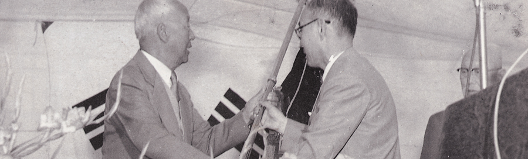

연혁
- 1950년대
- 1960년대
- 1970년대
- 1980년대
- 1990년대
- 2000년대
- 2010년대
- 2020년대

1952
- 03. 05.
- 仁荷工科大學 설립 기성위원회를 조직함.
- 12. 01.
- 하와이교포 이주50주년 기념사업으로 인천시에工科大學을 설립하고자 당시의李承晩 대통령이 발의함
1954
- 02. 01.
- 인천시로부터 시소유 12만 5천여 평과 국고 보조 100만불 李承晩 박사가 설립운영하던 「한인 기독교학교」의 매각대금과 하와이교포의 성금 등 15만불 및 국내 유지 기부금 270만원을 기부받음.
- 02. 05.
- 「財團法人 仁荷學園」 인가됨
인하공과대학의 설립이 인가, 대학에 금속, 기계, 광산, 전기, 조선 및 화학공학의 6개 학과를 설치함
- 03. 31.
- 초대학장 李源喆 박사 취임함
- 04. 24.
- 대학 개교
1956
- 12. 24.
- 2대 학장 崔承萬 선생 취임함
1958
- 01. 25.
- 대학에 병기공학과 및 응용물리학과 (원자력공학 전공)가 증설 인가되어 총 8개 학과로 됨
- 03. 14.
- 대학에 대학원의 설립이 인가되어 금속, 기계, 광산, 전기 및 화학공학 등 5개 학과에 석사학위 과정을 설치함.
1959
- 02. 09.
- 대학원 석사학위 과정에 선박공학과 증설 인가되어 총 6개 학과로 됨
- 12. 01.
- 대학의 응용물리학과가 원자력공학과로 개칭됨
1960
- 02. 20.
- 대학에 토목 및 건축공학과가 증설 인가되어 총 10개 학과로 됨
1961
- 09. 20.
- 3대 학장 金長勳 선생 취임함
1962
- 01. 17.
- 대학의 병기 및 원자력공학과가 폐과되어 총 8개 학과로 됨
1963
- 07. 01.
- 4대 학장 金炳熙 선생 취임함
- 12. 06.
- 대학에 4년제 대학 2부의 증설 인가되어 전자, 전기, 응용물리, 화학 및 기계공학의 5개 학과를 설치함
1964
- 02. 24.
- 「재단법인 인하학원」이 「학교법인 인하학원」으로 변경 인가됨
- 09. 17.
- 5대 학장 朴哲在 박사 취임함
1966
- 12. 28.
- 대학 2부의 응용물리학과가 폐과되어 총 4개 학과가 되고 대학에 응용물리학과가 증설되어 총 9개 학과로 됨
1967
- 11. 02.
- 대학에 부설 인하산업과학기술연구소가 신설 인가됨
- 12. 06.
- 대학에 정밀기계공학과가 증설 인가되어 총 10개 공학과로 됨
1968
- 09. 14.
- 「학교법인 인하학원」 재단 개편에 따라 한진그룹 회장 故 趙重勳 박사가 이사장으로 취임하고 6대 학장에 成佐慶 박사 취임함
- 12. 26.
- 대학에 요업, 전자 및 공업경영학과가 증설 인가되어 총 13개 학과로 되고, 대학 2부에 금속공학과가 증설 인가되어 총 5개 학과로 됨
1969
- 02. 04.
- 대학원 석사학위과정에 토목 및 건축공학과가 증설 인가되어 총 8개 학과로 됨
- 12. 24.
- 대학의 광산공학과가 자원공학과로 개칭되고 섬유 및 고분자 공학과가 증설 인가되어 총 15개 학과로 되고 금속, 전기, 토목, 건축 및 전자공학과의 정원 증원이 인가됨
1970
- 03. 07.
- 대학원에 박사학위과정이 신설 인가되어 금속, 기계, 전기 및 화학공학의 4개학과에 박사학위과정을 설치
- 12. 31.
- 대학의 공업경영학과가 산업공학과로 개칭되고 통신공학과가 증설 인가되어 총 16개 학과로 됨
1971
- 12. 31.
- 본 대학이 종합대학으로 승격 인가됨. 공과대학에 항공 및 생물화학공학과가 증설 인가되어 총 18개 학과로 되고, 이과대학을 신설, 수학, 화학 및 가정학과의 3개 학과, 경영대학을 신설, 경영대학의 1개학과 설치가 각각 인가됨
1972
- 03. 01.
- 초대 총장 成佐慶 박사 취임함
- 10. 17.
- 대학교육의 강화와 교수 방법 혁신을 위한 실험대학으로 선정됨
- 12. 26.
- 대학교에 사범대학을 신설, 국어, 사회 및 외국어교육과 등 3개학과의 설치가 인가됨. 공과대학의 정밀기계, 통신, 생물화학공학과가 폐과되고, 대학2부의 전기공학과와 전자공학과가 전기전자공학과로 통합되어 공과대학은 총 15개 학과, 대학2부는 총 4개 학과로 됨
1973
- 01. 08.
- 대학원 석사학위 과정에 응용물리 및 전자공학과가 증설 인가되어 총 10개 학과로 됨
- 08. 02.
- 대학교에 부설 인문학연구소, 부설 학생생활연구소 및 부설 전자계산소가 신설 인가됨
- 12. 31.
- 경영대학에 무역학과, 사범대학에 공업교육과가 각각 증설 인가되고 이과대학의 가정학과가 사범대학의 가정교육과로 개편되어 경영대학은 총 2개 학과, 사범대학은 총 5개 학과, 이과대학은 총 2개 학과로 되었으며, 공과대학의 기계, 조선, 화학, 금속 및 토목공학과의 정원 증원이 각각 인가됨
- 12. 31.
- 대학원 석사학위과정에 요업, 섬유 및 고분자공학과가 증설 인가되어 총 13개 학과로 됨
1974
- 12. 21.
- 사범대학의 공업교육과가 공과대학의 공업교육과로 개편되어 사범대학은 총 4개 학과, 공과대학은 총 16개 학과로 되었으며, 대학 2부의 전기전자, 화학, 기계 및 금속공학과의 정원 증원이 각각 인가됨
1975
- 01. 12.
- 대학원 석사학위과정에 산업공학과, 박사학위과정에 토목 및 건축공학과가 각각 증설 인가되어 석사학위과정은 총 14개 학과, 박사학위과정은 총 6개 학과로 됨
- 10. 01.
- University of Southern California 교류협정 체결
- 12. 30.
- 이과대학에 생물학과가 증설 인가되어 총 3개 학과로 되었으며, 경영대학의 경영학과, 사범대학의 국어교육과, 공과대학의 항공, 금속 및 기계공학과의 정원 증원이 각각 인가됨
1976
- 01. 22.
- 대학원 석사학위과정에 항공공학, 수학, 화학 및 경영학과가 증설 인가되고 광산공학과가 자원공학과로 개편 인가되어 총 18개 학과로 되고 박사학위과정의 기계 및 토목공학과의 정원 증원이 각각 인가됨
- 03. 15.
- 2대 총장 李在澈 박사 취임함
- 03. 30.
- 대학교에 부설 항공경영관리연구소가 신설 인가됨
- 12. 31.
- 경영대학이 법경대학으로 개편 인가되고 법학 및 행정학과의 증설이 인가되어 총 4개 학과로 됨. 대학 2부에 토목공학과의 증설, 전기전자공학과는 전기공학과와 전자공학과로 분리 개편과 정원 증원이 각각 인가되어 총 6개 학과로 됨. 공과대학의 응용물리, 고분자, 섬유, 요업, 자원공학과, 이과대학의 수학 및 화학과, 사범대학의 사회교육과의 정원 증원이 각각 인가됨
1977
- 01. 15.
- 대학원 석사학위과정에 인문사회계열로서 국어국문, 영어영문 및 사학과와 박사학위과정에 고분자, 전자 및 자원공학과가 증설 인가되고, 학과 편성을 계열화하여 석사학위과정은 4계열 21개 학과, 박사학위과정은 1계열 9개 학과로 됨
- 07. 06.
- 대학교에 부설 새마을연구소가 신설 인가됨
- 08. 27.
- 대만 大同大學 교류협정 체결
1978
- 01. 11.
- 이과대학에 전자계산, 법경대학에 회계 및 상업교육, 사범대학에 체육교육과가 증설 인가되어 이과대학은 총 4개 학과, 법경대학은 총 6개 학과, 사범대학은 총 5개학과로 되었으며 공과대학의 기계, 항공, 전기 및 건축공학과의 정원 증원이 각각 인가됨. 대학 2부에 경영학과가 증설 인가되어 총 7개 학과로 되고 기계, 전자 및 토목공학과의 정원 증원이 각각 인가됨
- 02. 15.
- 대학교에 교육대학원의 설립이 인가되어 국어, 영어, 일반사회 및 가정교육 등 4개 전공의 석사학위과정과 연구과정을 각각 설치함. 대학원 박사학위과정에 이학계열 화학과가 증설 인가되어 총 2계열 10개 학과로 됨
- 10. 07.
- 이과대학에 물리 및 해양학과, 법경대학에 경제학과, 사범대학에 역사교육, 교육 및 미술교육과가 각각 증설 인가되어 이과대학은 총 6개 학과, 법경대학은 총 7개학과, 사범대학은 총 8개 학과로 되고 공과대학의 기계, 금속 및 항공공학과의 정원 증원이 각각 인가됨. 대학 2부에 조선, 산업, 건축공학과 및 무역학과가 증설 인가되어 총 11개 학과로 되고 기계, 전기, 화학 및 토목공학과의 정원 증원이 각각 인가됨
- 12. 30.
- 대학원의 석사 학위과정에 공학계열 및 경영계열의 정원증원이 인가되고, 박사학위과정의 공학계열의 선박 및 섬유공학과가 증설 인가되어 총 2계열 12개 학과로 됨. 교육대학원에 교육행정 및 수학교육 전공이 증설 인가되어 총 6개 전공이 됨
1979
- 09. 22.
- 법경대학에 외교학과, 사범대학에 불어불문, 중어중문, 일어일문학과가 각각 증설 인가되어 법경대학은 총 8개학과, 사범대학은 총 11개 학과로 되었으며 공과대학의 산업공학과와 법경대학의 법학, 행정, 경영학과의 정원 증원이 각각 인가됨. 대학 2부에 영문, 행정, 회계, 전자계산학과가 증설 인가되어 총 15개 학과로 됨
- 11. 19.
- 대학교에 부설 기초과학연구소가 신설 인가됨
- 12. 05.
- 대학원 석사학위과정 이학계열에 생물학과가 증설 인가되어 총 4계열 22개 학과가 되고 공학계열 및 이학계열의 정원 증원이 각각 인가되었으며, 박사학위과정에 수학과가 증설 인가되어 총 2계열 13개 학과 됨. 교육대학원에 과학교육 전공이 증설 인가되어 총 7개 전공이 되었으며 증원이 인가됨
1980
- 03. 01.
- 제 3대 총장 李在澈 박사 연임
- 06. 16.
- 대학교에 부설 사회과학연구소가 신설 인가됨
- 10. 02.
- 공과대학의 요업공학과가 무기재료공학과로 개편되고, 법경대학이 경상대학과 법정대학으로, 사범대학이 사범대학과 문과대학으로 분리 인가되어 사범대학의 국어교육과는 국어국문학과로, 외국어교육과는 영어영문학과로, 역사교육과는 사학과로 개편되어 불어불문, 중어중문, 일어일문학과와 함께 신설된 문과대학에 소속됨으로써 경상대학은 총 5개 학과, 법정대학은 총 3개 학과, 사범대학은 총 5개 학과, 문과대학은 총 8개 학과로 되었으며, 대학 2부에 일어일문학과가 증설 인가되어 총 16개 학과로 됨
- 11. 03.
- 대학교에 경영대학원의 설립이 인가되어 경영, 무역, 행정학과의 3개 학과의 석사학위과정과 연구과정을 각각 설치함
- 11. 24.
- 대학원 석사학위과정 법정계열에 법학과 및 행정학과가 증설 인가되어 총 5계열 24개 학과로 되고 공학계열과 이학계열의 정원 증원이 각각 인가되었으며 박사학위과정 인문사회계열에 국어국문, 영어영문 및 사학과가 증설 인가되어 총 3계열 16개 학과로 됨
- 12. 05.
- 교육대학원에 물리, 화학, 생물, 역사 및 국민윤리 전공이 증설 인가되고 과학교육 전공이 폐지되어 총 11개 전공으로 되었으며 정원 증원이 인가됨
1981
- 08. 09.
- 총장직무대리 金熙喆 박사 집무
- 10. 20.
- 공과대학에 환경공학과의 증설과 공업교육과의 폐과, 사범대학에 국어교육 및 영어교육과가 각각 증설 인가되었으며, 가정대학 가정관리학과로 개편되고 식품영양학과 및 의류학과의 설치가 인가되어 공과대학은 총 16개 학과, 사범대학은 총 6개 학과, 가정대학은 3개 학과가 됨
- 11. 25.
- 교육대학원에 상담심리 및 한문교육 전공이 증설 인가되어 총 13개 전공이 되었으며, 경영대학원에 교통학과가 증설 인가되어 총 4개 학과로 됨
- 12. 23.
- 4대 총장 金熙喆 박사 취임함
1982
- 01. 20.
- 대학원 석사학위과정 이학계열에 전자계산학과와 경상계열에 무역학과가 증설 인가되어 총 5계열 26개 학과로 되었으며, 박사학위과정 공학계열에 응용물리 및 요업공학과와 이학계열에 생물학과 및 경영계열에 경영학과가 각각 증설 인가되어 총 4계열 20개학과가 됨
- 10. 05.
- 법정대학의 외교학과가 정치외교학과로 개편되고 경상대학의 상업교육과 및 가정대학의 가정관리학과 정원 증원이 각각 인가됨
- 11. 22.
- 교육대학원에 체육교육 전공이 증설 인가되어 총 14개 전공으로 됨
- 11. 20.
- 대학원 석사 학위과정 이학계열에 물리 및 해양학과, 인문계열에 교육학과 및 경상계열에 경제학과와 박사학위과정 법정계열에 법학과가 증설 인가되어 석사 학위과정 총 5계열 30개 학과 박사 학위과정 총 5계열 21개 학과가 됨
1983
- 10. 29.
- 대학원 석사학위과정 법정계열에 정치외교학과, 박사학위과정 법정계열에 행정학과가 증설 인가되어 석사학위과정 총 5계열 31개 학과, 박사학위과정 총 5계열 22개 학과가 됨. 교육대학원에 미술교육 전공이 증설 인가되어 총 15개 전공으로 되고 정원 증원이 인가됨
- 12. 30.
- 5대 총장 朴泰源 박사 취임함
1984
- 10. 05.
- 대학교에 의과대학을 신설, 의예과의 1개학과 설치가 인가됨
- 11. 27.
- 대학원 석사학위과정 인문계열에 철학과, 불어불문학과, 독어독문학과, 경상계열에 회계학과, 박사학위과정 공학계열에 항공공학과, 이학계열에 물리학과가 증설 인가되어, 석사 학위과정 총 5계열 35개학과, 박사 학위과정 총 5계열 24개 학과가 됨
1985
- 07. 22.
- 미국 Hahnemann University 교류협정 체결
- 07. 19.
- 미국 University of Maryland 교류협정 체결
- 03. 29.
- 벨지움 University of Ghent 교류협정 체결
- 11. 05.
- 공과대학에 자동화공학과 및 생물공학과가 각각 증설 인가되었으며, 공과대학의 기계공학과의 화학공학 및 환경공학과 정원 감축이 인가됨
1986
- 04. 01.
- 프랑스 University of Rouen 교류협정 체결
- 04. 19.
- 일본 昭和大學 교류협정 체결
- 05. 29.
- 대만 中國文化大學 교류협정 체결
- 10. 20.
- 대학교에 부설 한국학연구소가 신설 인가됨
- 11. 16.
- 이과대학 수학과, 경상대학 상업교육과, 문과대학 영어영문학과의 정원감원과 이과대학에 통계학과 및 의과대학에 의학과가 신설 인가됨
1987
- 04. 04.
- 대학교 부설 해양과학기술연구소, 스포츠과학연구소가 신설 인가됨
- 10. 15.
- 의과대학에 부속병원 설립이 인가됨
- 10. 15.
- 영국 University of Newcastle upon tyne 교류협정 체결
- 11. 09.
- 산업기술대학원이 신설 인가되어 7개 학과에 석사과정 및 연구과정 설치됨
- 12. 30.
- 6대 총장 朴泰源 박사 연임
1988
- 11. 30.
- 대학원 박사학위 과정 공학계열에 환경공학과, 인문계열에 교육학과가 신설됨
- 12. 01.
- 대학교에 교양교육원, 행정대학원, 부설 의약물독성연구소가 신설됨
1989
- 02. 17.
- 미국 University of Hawaii 교류협정 체결
- 03. 13.
- 조선공학과 등 과명칭 변경 (선박해양공학과, 항공우주공학과 등)
- 10. 28.
- 야간강좌 일어일본학과를 주간에 흡수
- 12. 29.
- 이과대학 전자계산학과가 공과대학 전자계산학과로 소속 변경 인가됨
1990
- 02. 04.
- 7대 총장 元永武 박사 취임
- 03. 30.
- 의과대학 부속병원 기공(700병상규모)
- 10. 22.
- 대학교에 고분자연구소, 소재연구소, 컴퓨터과학응용연구소가 신설 인가됨
- 11. 08.
- 석사학위 과정에 의학과, 통계학과 신설 인가되어 6계열 39개학과로, 박사학위과정에 전자계산학과가 신설 인가되어 5계열 32개 학과로 인가됨. 산업기술대학원에 화학공정공학과가 신설 인가되어 정원이 80명에서 110명으로 증원 인가됨. 행정대학원 정원이 60명에서 80명으로 증원 인가됨
1991
- 08. 09.
- 총장직무대리 金熙喆 박사 집무
1992
- 02. 19.
- 공과대학 응용물리학과, 전자계산학과가 전자재료공학과, 전자계산공학과로 학과 명칭이 변경되고, 공과대학 기계공학과, 전기공학과, 전자계산공학과 정원이 증원 인가됨
- 06. 10.
- 대학교 CFC대체시스템공학연구소, 정보전자공동연구소, 환경연구소, 경영연구소가 신설 인가됨
- 07. 30.
- 석사학위과정에 자동화공학과, 생물공학과, 가정관리학과가 신설되어 6계열 42개학과로 박사학위과정에 회계학과가 신설되어 5계열 33학과로 인가되고, 응용물리학과가 전자재료공학과로 학과명칭이 변경 인가됨
- 07. 31.
- 공과대학 자동화공학과, 전자재료공학과, 화학공학과가 정원이 증원 이과대학 해양학과, 경상대학 경영학과, 무역학과, 법정대학 행정학과, 문 과대학 영어영문학과, 일어일본학과가 정원이 감원되고 의과대학 간호학과가 신설됨
1993
- 02. 22.
- Oklahoma State University 교류협정체결
- 03. 23.
- 중국 延邊大學 교류협정체결
- 09. 03.
- 공과대학 자동화공학과, 전자재료공학과가 정원이 증원. 공과대학 항공탐사공학과가 신설 인가됨
- 09. 04.
- 석사과정에 59명 증원하여 734명에서 805명으로 박사과정 21명 증원하여 254명에서 275명으로 승인되었으며 의류학과를 신설하였음
- 11. 29.
- 러시아 Moscow State Technical University, Moscow State Institute of International Relations 교류협정 체결
1994
- 02. 01.
- 대학부속기관인 시청각교육원이 외국어교육원으로 명칭변경 인가, 사회교육원, 취업정보센타, 기술지원센타가 신설 인가됨
- 02. 24.
- 8대총장 趙成鈺 박사 취임함
- 03. 02.
- 대학교에 부설 교육연구소가 신설
- 04. 01.
- 대학교에 부설 생활과학연구소와 선박해양공학연구소가 신설
- 07. 18.
- 캐나다 Simon Fraser University 교류협정 체결
- 09. 12.
- 경상대학의 경영학과, 무역학과, 법정대학의 행정학과, 문과대학의 영어영문학과, 일어일본학과 정원이 감원되고 의과대학의 간호학과 정원을 20명 증원하여 입학정원 50명으로 인가됨. 공과대학의 항공우주공학과와 자동화공학과를 통합하여 항공우주·자동화공학과군으로 명칭을 변경하고 `95학년도 신입생을 선발하기로 결정함
- 10. 01.
- 대학교에 부설 기계기술공동연구소가 신설됨
1995
- 02. 09.
- 중국 北京語言文化大學 교류협정 체결
- 02. 10.
- 중국 天津大學 교류협정 체결
- 04. 01.
- 우크라이나 Ukraninian Academy of Sciences 교류협정 체결
- 09. 07.
- 공과대학의 기계공학과와 항공우주·자동화공학과군을 통합하여 기계·항공·자동화공학부로, 화학공학과, 고분자공학과, 생물공학과를 통합하여 화공·고분자·생물공학부로, 경상대학의 경영학과, 회계학과, 상업교육과를 통합하여 경영학부로 명칭을 변경하고 ’96학년도부터 신입생 선발이 인가됨
- 10. 04.
- 학부과정에 이공계학생을 대상으로 기술경영석사과정을 설치키로 교무위원회의에서 의결함
- 11. 22.
- 경상대학의 경제학과 무역학과를 통합하여 경제통상학부로, 공과대학의 항공탐사공학과를 지리정보공학과로 명칭을 변경하고, `96학년부터 신입생을 선발하기로 교육부로부터 인가됨
1996
- 01. 01.
- 교육부의 대학내 전과 및 편입학 확대 방안 (95.12.19)에 따라 `96학년도부터 2, 3학년에 전과 및 편입학을 확대 반영키로 교무위원회에서 의결됨
- 04. 01.
- 일본 北九州大學 교류협정 체결
- 04. 18.
- 중국 無錫經工大學 生物工程學院 교류협정 체결
- 04. 23.
- 미국 University of Michigan 교류협정 체결
- 05. 27.
- 의과대학 부속병원 개원 (지하 3층, 지상 16층, 750병상)
- 07. 04.
- 중국 南京航工航天大學 교류협정 체결
- 07. 05.
- 대학교에 반도체 및 박막기술연구소, 분자동역학연구소, 의과학연구소가 신설 인가됨
- 11. 26.
- 중국 南開大學 교류협정 체결
1997
- 01. 30.
- 중국 淸華大學 교류협정 체결
- 01. 31.
- 대학교에 산업기술대학원이 산업대학원으로 명칭변경 인가. 수자원시스템연구소, 건설환경시스템연구소가 신설 인가됨. 공과대학 전기공학과, 전자공학과, 전자재료공학과, 전자계산공학과를 통합하여 전자·전기·컴퓨터공학부로 명칭을 변경하고 `97학년부터 신입생을 선발하기로 교육부로부터 인가됨. 가정대학 가정관리학과가 소비자아동학과로 명칭변경 인가
- 10. 31.
- 한진그룹 부회장인 趙亮鎬 박사 이사장으로 취임함
- 12. 30.
- 中國科學院 교류협정 체결
1998
- 02. 16.
- 법정대학에 언론정보학과 (야간), 산업재산권학과(야간)를 신설하고 각각 40명의 정원이 인가됨. 교양교육원 및 기술지원센터의 직제를 폐지하고, 증등교원연수원 및 교수학습센터, 지리정보공학연구소, 플라즈마 기술기반센터의 신설이 인가됨
- 03. 01.
- 제9대 총장 盧健一 박사 취임
- 06. 25.
- 일본 山口大學 교류협정 체결
- 07. 07.
- 법정대학을 법과대학 <법학과, 산업재산권학과 (야간)>및 사회과학대학 <행정학과, 정치외교학과, 언론정보학과 (야간)>으로 분리 개편하고, 가정대학을 생활과학대학으로 명칭변경. 분자세포생물학연구소의 신설이 인가됨
- 10. 09.
- 전자계산소를 총장 직속의 전산정보실로 명칭 변경하고, 취업정보센터를 장학과로 흡수 통합함
- 10. 21.
- 공과대학 무기재료공학과, 금속공학과를 통합하여 재료공학부로, 환경공학과, 자원공학과를 통합하여 지구환경공학부로, 지리정보공학과, 토목공학과를 통합, 토목 및 지리정보공학부로 명칭을 변경함. 이과대학 수학과, 통계학과를 통합하여 수학·통계학부로, 물리학과, 화학과를 통합하여 물리·화학학부로, 생물학과, 해양학과를 통합하여 생물·해양학부로 명칭 변경함. 법과대학 법학과를 법학부로 명칭을 변경하고, 사회과학대학 언론정보학과를 주간으로 전환하여 행정학과, 정치외교학과, 언론정보학과를 통합, 사회과학부로 명칭 변경함. 문과대학 국어국문학과, 불어불문학과, 독어독문학과, 중국어중국학과, 일어일본학과를 통합하여 어문학부로, 철학과, 사학과를 통합하여 인문학부로 명칭 변경함. 생활과학대학 소비자아동학과, 식품영양학과, 의류학과를 통합 생활과학대학으로 명칭 변경함
- 12. 01.
- 미국 Duke University 교류협정 체결
1999
- 01. 26.
- 일본 高知工科大學 교류협정 체결
- 04. 17.
- 태안 해양과학연구소 및 학생실습관 개관
- 04. 19.
- 영국 Heriot-Watt University 교류협정 체결
- 05. 31.
- 중국 北京郵電大學 교류협정 체결
- 06. 18.
- 서호관 개관
- 06. 29.
- 서해연안환경연구센터 개소, University of Hartford 교류협정 체결
- 08. 19.
- 중국 우시경공대 (武錫經工大)와 교류 협정 체결
- 09. 06.
- 의과대 이전
- 09. 09.
- 창업지원연구센터 개소
- 09. 17.
- 해양조사선 취항
- 09. 20.
- 학생종합서비스센터 개소
- 10. 14.
- 공과대학 토목 및 지리정보공학부와 건축공학과를 통합하여 건설공학부로 명칭 변경함. 법과대학 산업재산권학과를 법학부에 통합함. 문과대학 어문학부, 인문학부, 영어영문학과를 통합하여 인문학부로 함. 생활과학대학 소비자아동학과, 식품영양학과, 의류학과를 통합하여 생활과학부로 명칭 변경함
- 12. 15.
- 대학교에 부설 법학연구소가 신설
2000
- 02. 01.
- 일본 新潟大學 교류협정 체결
- 03. 01.
- 일본 東京工業大學 교류협정 체결. 대학교에 부설 생물산업기술연구소가 신설
- 03. 10.
- 정보통신대학원 개원. 교통대학원을 국제통상물류 대학원으로 확대개편
- 03. 17.
- 기술이전센터 개소
- 03. 21.
- 수송기계용 경량화 소재 기술혁신센터 개소
- 05. 15.
- 태국 Burapha University 교류협정 체결
- 06. 01.
- 일본 東北大學 교류협정 체결
- 06. 08.
- 중국 大連理工大學 교류협정 체결
- 06. 29.
- 미국 Univ. of New Orleans 교류협정 체결
- 07. 25.
- 아르헨티나 National University of La Plata 교류협정 체결
- 08. 01.
- 대학교에 부설 광과학기술연구소와 청정기반기술연구소가 신설
- 08. 08.
- 정보통신공학부, 국제통상학부 신설. 응용화학계열을 화학공학부로 명칭 변경. 생활과학대학 의류학전공과 생활디자인전공을 의류디자인학 전공으로 통합. 러시아 Far Eastern State Technical University 교류협정 체결
- 08. 26.
- 기숙사 개관
- 10. 19.
- 제2고시원 개관
- 11. 03.
- 러시아 Khavarovsk State Univ. of Technology 교류협정 체결
- 11. 28.
- 인하벤처관 착공
2001
- 01. 29.
- 미국 Virginia Commonwealth Univ. 교류협정 체결
- 03. 15.
- 정석학술정보관 착공
2002
- 01. 15.
- 미국 Troy State University 교류협정 체결
- 03. 08.
- 제10대 洪承湧 총장 취임함
- 04. 11.
- 중국 對外經濟貿易大學 교류협정 체결
- 05. 02.
- 소재경량화 기술혁신센터 운영 ‘소재경량화 시범공장’ 김포시 하성면 원산리에 개관
- 05. 20.
- 일본 筑波大學 교류협정 체결
- 05. 21.
- ‘인하 벤처창업관’ 준공
- 06. 10.
- 인하대학교, 美 남가주대학교(USC), 美유나이티드 테크놀로지사(UTC)와 공동 프로젝트 수행 산학협정서 서명
- 06. 21.
- 中國社會科學院 교류협정 체결
- 07. 25.
- 미국 University of Rhode Island 교류협정 체결
- 07. 29.
- 미국 University of Washington 교류협정 체결
- 09. 09.
- 중국 吉林大學 교류협정 체결
- 10. 04.
- 국방대학교와 학술교류 협정 조인
- 10. 23.
- 러시아 Baikal National University of Economy and Law 교류협정 체결
- 12. 31.
- 기계공학부를 기계항공공학부로, 화공생명공학부를 생명화학공학부로 명칭 변경. 부설연구소에 중국관계연구소, 나노하이테크연구센터, 수퍼지능기술연구소, IT 신기술연구소 신설. 몽골 National Univ. of Mongolia 교류협정 체결
2003
- 02. 13.
- 중국 厦門(Xiamen)大學 교류협정 체결
- 06. 25.
- 일본 山口(Yamaguchi)大學 교류 협정 갱신
- 07. 04.
- 일본 長崎(Nagasaki)大學 교류협정 체결
- 09. 17.
- 정석학술정보관 개관
- 09. 29.
- 미국 Queens College 교류협정 체결
- 10. 01.
- 정석물류통상연구원 개원
- 10. 24.
- 사범대학 수학교육과 신설. 아태물류학부 물류전공 신설. 예술체육학부에 생활체육전공, 시각정보디자인전공, 미술전공 신설. 생명화학공학부를 생명화학공학부와 나노시스템공학부로 분리. 기계항공공학부를 기계공학부로, 재료공학부를 신소재공학부로 명칭 변경
2004
- 01. 18.
- 프랑스 Pierre et Marie Curie University 교류협정 체결
- 02. 09.
- 미국 North Carolina A&T State University 교류협정 체결
- 03. 15.
- 중국 東北大學 교류협정 체결
- 03. 17.
- 스웨덴 University College of Boras 교류협정 체결
- 04. 08.
- 중국 吉林大學 교수, 학생교류 부속서 체결
- 04. 22.
- 개교 50주년 기념식
- 04. 29.
- Global U7 Consortium 회의 개최. 교육·연구·행정의 국제화와 표준화 도모. 협력대학: 본교, Univ. of Washington, Univ. of Rhode Island, Le Havre University, Ximen University, Royal Melbourne Institute of Technology, Univ. of Haifa
- 05. 07.
- 미국 Illinois Institute of Technology 교류협정 체결
- 06. 09.
- 중국 南京師范大學 교류협정 체결
- 08. 11.
- 중국 重慶郵電學院, IT공동대학원 설립 위한 협정서 체결
- 09. 16.
- 중국 北京工業大學 교류협정 체결
- 09. 20.
- 중앙일보 전국대학평가 'TOP 9'
- 10. 29.
- 국제 산학협정 체결. 한국항공대학교, 프랑스 에어버스사, 미국 USC 참여
- 11. 10.
- 중국 蘇州大學 교류협정 체결
2005
- 02. 21.
- 2004년도 대교협 ‘전국 대학종합평가’ 4위
- 03. 01.
- 이과대학을 자연과학대학으로 명칭 변경
- 03. 23.
- 6호관 리모델링 완공
- 05. 26.
- 일본 메이지대 Global U7 Consortium 신규가입. Global U8 Consortium으로 명칭 변경
- 06. 03.
- 2호관 현관 및 보건소 리모델링 완공
- 10. 06.
- 대강당(하나홀) 리모델링 완공
- 11. 25.
- 정석학술정보관 ‘ISO 9001:2000’ 인증 획득
- 12. 15.
- .Net 기반 ‘차세대 정보시스템’ 개통
2006
- 02. 23.
- 제2생활관 및 게스트하우스 개관
- 03. 01.
- 洪承湧 박사 제11대 총장 연임
- 03. 29.
- 5남관 리모델링 및 학생휴게관 신축
- 04. 26.
- ‘2단계 BK21사업’, 대형 6개 사업단, 핵심 6개 사업팀 선정
- 06. 14.
- 인천자동차부품기술센터 착공
- 09. 06.
- 국내 최초 물류전문대학원 출범
- 09. 07.
- 본관 중앙, 2북관 리모델링 완공
- 09. 26.
- 중앙일보 전국대학평가 ‘Top 9’
- 11. 01.
- 부설 문화경영심리연구소 신설
- 11. 14.
- 배구부, 2006년 5개 대회 전관왕 달성
- 11. 16.
- 국제관계연구소 발간 「Pacific Focus」, SSCI 등재 확정
- 11. 20.
- 자연과학대학 기초의과학부 신설
- 11. 27.
- 지능형국토정보기술혁신사업단 개소
2007
- 07. 23.
- 교육인적자원부 수도권대학특성화사업 선정(물류·IT 분야) - 수도권 1위
- 09. 27.
- 2007 중앙일보 대학종합평가 10위
- 10. 30.
- 로스쿨관 개관
- 11. 14.
- 인문한국(HK) 지원사업 선정
- 11. 16.
- The Times - QS 세계대학평가 500대 대학 진입
- 11. 21.
- 5북관 리모델링 완공
- 12. 06.
- 송도 지식산업 복합단지 건설추진단 발족
- 12. 31.
- 외부연구비 1,000억 돌파
2008
- 01. 14.
- 인천경제자유구역청과 송도캠퍼스 조성 MOU 체결
- 03. 01.
- 공과대학 분리, IT 공과대학 신설
- 03. 19.
- 5남관 리모델링 완공
- 05. 20.
- 인하-AVL 자동차기술연구소 개소
- 07. 01.
- 인하대 부설 식품안전연구센터 개소
- 08. 22.
- 2008 교육과학기술부 우수인력양성대학 교육역량강화사업 선정
- 08. 25.
- 국내 대학 최초 다국어기반 이러닝교육포털시스템 구축
- 09. 30.
- 인적자원개발 우수기관 인증 획득
- 11. 10.
- 자원개발 특성화대학 사업 선정
2009
- 03. 01.
- 제12대 총장 李本守 박사 취임. 법학전문대학원 개원. 의학전문대학원 개원. 경영대학 글로벌금융학부 신설
- 06. 22.
- (재)유타-인하 DDS공동연구소 개소
- 10. 09.
- QS 더타임스 세계대학평가 500위 이내 진입
- 12. 21.
- 후문가 차없는 거리, 걷고싶은 거리 조성사업 준공
2010
- 03. 26.
- 카네기멜론대와 로봇분야 연구소 설립 MOU체결
- 05. 13.
- 조선일보 QS 아시아대학평가 83위. 인하 PACE 센터 개소
- 05. 27.
- 인천경제자유구역청과 송도캠퍼스 조성을 위한 사업협약 체결
- 09. 08.
- QS 세계대학평가 443위
- 09. 27.
- 중앙일보 대학평가 10위
- 10. 01.
- 교과부 취업률 6위(졸업자 3000명 이상)
- 12. 07.
- 물류전문대학원 이코노미스트지 한국형 MBA 국내 2위
2011
- 02. 23.
- LG디스플레이 주식회사와 인력양성을 위한 협약 체결
- 03. 04.
- KT와 스마트 캠퍼스 구축 MOU 체결
- 03. 17.
- 삼성전자와 산업체 맞춤형 인재육성을 위한 STP 협약 체결
- 03. 29.
- CJ GLS(주)와 물류전문인력 육성 및 채용을 위한 MOU 체결
- 05. 13.
- 교과부 IT분야 산업계 관점 대학평가 최우수 선정
- 08. 25.
- 교과부 취업률 5위(4년제 대학 졸업자 3천명 이상)
- 09. 30.
- 지경부 고성능 LED 조명모듈 핵심기술 연구센터 개소
- 10. 25.
- 지경부 소프트웨어 마에스트로 최다배출
- 12. 13.
- 국가품질경영대회 ‘품질경영상’ 수상
2012
- 01. 04.
- 한국학연구소 발간 '한국학 연구' 한국연구재단 공인등재지 선정
- 03. 01.
- 제13대 총장 朴瑃培 박사 취임
- 03. 26.
- 인천항만공사와 산학협력 협약 체결
- 03. 28.
- 교과부 ‘산학협력 선도대학(LINC)’으로 선정
- 05. 30.
- 조선일보ㆍQS 아시아대학평가 68위
- 08. 23.
- 교과부 취업률 4위(4년제 대학 졸업자 3천명 이상)
- 12. 24.
- 문화예술교육사 교육기관 선정
2013
- 01. 09.
- 교과부 외국인 유학생 유치ㆍ관리 역량 인증대학 선정
- 02. 04.
- 태국 출라롱콘대학과 교류협정 체결
- 03. 20.
- 공군항공우주의료원과 학술교류 협정 체결
- 03. 26.
- 교통안전공단과 교통안전 선진화를 위한 업무협약 체결
- 07. 25.
- ‘학교법인 정석학원’과 합병하여 ‘학교법인 정석 인하학원’으로 인가
- 08. 29.
- 교과부 취업률 5위(4년제 대학 졸업자 3천명 이상)
- 10. 23.
- 산학협동재단ㆍ동아일보사 주관 기업 관점 산학협력 평가 최우수대학 선정
- 11. 07.
- 창업보육센터 준공식 개최
2014
- 03. 04.
- 경영대, AACSB 인증 취득
- 06. 17.
- 타슈켄트 인하대학교 설립 및 운영 협정 체결
- 08. 26.
- 동아일보 청년드림 대학평가 최우수 대학 선정
- 08. 29.
- 교과부 취업률 5위 (4년제 대학 졸업자 3천명 이상)
- 10. 02.
- 타슈켄트 인하대학교(IUT·Inha University in Tashkent) 개교
- 10. 28.
- 개교 60주년 기념 ‘60주년기념관’ 착공
2015
- 02. 25.
- 제14대 총장 최순자 박사 취임
- 04. 01.
- 고용노동부 IPP(장기현장실습제)형 일학습병행제 운영 대학 선정
- 04. 09.
- 교육부 에너지, 환경, 바이오의약 분야 산업계 관점 대학평가 최우수 선정
2016
- 02. 26.
- 수인선 ‘인하대역’ 개통
- 05. 09.
- 교육부, 국가평생교육진흥원 주관 평생교육단과대학 지원사업 선정
- 10. 17.
- 중앙일보 대학종합평가 10위
- 12. 13.
- 산학융합지구 조성사업 선정
2017
- 03. 01.
- 사회복지학과, 국제학부, 메카트로닉스학과, IT융합학과, 헬스디자인학과, 서비스산업경영학과, 금융세무재테크학과 신설. 컴퓨터정보공학과 → 컴퓨터공학과, 중국언어문화학과 → 중국학과, 아동학과 → 아동심리학과 등 학과명칭 변경 및 소속 변경
- 04. 30.
- 교육부, 한국대학교육협의회 2017년도 대학자율역량강화사업 (ACE+) 선정
- 06. 09.
- 교육부 사회맞춤형 산학협력 선도대학 (LINC+) 육성사업 선정
- 10. 23.
- 중앙일보 대학종합평가 8위
2018
- 03. 01.
- 화학공학과와 유기응용재료공학과, 건축학과와 건축공학과, 문화콘텐츠학과와 문화경영학과 통합. 시각정보디자인학과 → 디자인융합학과, IT융합학과 → 소프트웨어융합공학과 등 명칭 변경
- 05. 18.
- 교육부ㆍ한국대학교육협의회, ‘고교교육 기여대학 지원사업’ 12년 연속 선정
- 05. 24.
- 정석학술정보관 국회도서관장상 수상
- 09. 01.
- 제15대 조명우 총장 취임
- 10. 30.
- 중앙일보 대학평가 11위
2019
- 03. 01.
- 메카트로닉스학과 → 메카트로닉스공학과, 금융세무재테크학과 → 금융투자학과로 명칭 변경
- 06. 17.
- 교육부ㆍ한국대학교육협의회, ‘고교교육 기여대학 지원사업’ 13년 연속 선정
- 10. 14.
- 교육부ㆍ문화체육관광부, ‘학교 예술강사 지원사업’ 운영기관으로 3년 연속 선정
- 10. 26.
- 타슈켄트 인하대(IUT), 국내 최초 해외 대학 졸업생들에게 국내 대학 학위 수여
- 12. 08.
- 한국생산성본부, ‘2019 국가고객만족도(NCSI)’ 사립대학교 부문 8위
- 12. 09.
- 동아일보ㆍ고용부, ‘2019 청년드림 대학평가’ 최우수대학 선정
2010
- 03. 26.
- 카네기멜론대와 로봇분야 연구소 설립 MOU체결
- 05. 13.
- 조선일보 QS 아시아대학평가 83위. 인하 PACE 센터 개소
- 05. 27.
- 인천경제자유구역청과 송도캠퍼스 조성을 위한 사업협약 체결
- 09. 08.
- QS 세계대학평가 443위
- 09. 27.
- 중앙일보 대학평가 10위
- 10. 01.
- 교과부 취업률 6위(졸업자 3000명 이상)
- 12. 07.
- 물류전문대학원 이코노미스트지 한국형 MBA 국내 2위
2011
- 02. 23.
- LG디스플레이 주식회사와 인력양성을 위한 협약 체결
- 03. 04.
- KT와 스마트 캠퍼스 구축 MOU 체결
- 03. 17.
- 삼성전자와 산업체 맞춤형 인재육성을 위한 STP 협약 체결
- 03. 29.
- CJ GLS(주)와 물류전문인력 육성 및 채용을 위한 MOU 체결
- 05. 13.
- 교과부 IT분야 산업계 관점 대학평가 최우수 선정
- 08. 25.
- 교과부 취업률 5위(4년제 대학 졸업자 3천명 이상)
- 09. 30.
- 지경부 고성능 LED 조명모듈 핵심기술 연구센터 개소
- 10. 25.
- 지경부 소프트웨어 마에스트로 최다배출
- 12. 13.
- 국가품질경영대회 ‘품질경영상’ 수상
2012
- 01. 04.
- 한국학연구소 발간 '한국학 연구' 한국연구재단 공인등재지 선정
- 03. 01.
- 제13대 총장 朴瑃培 박사 취임
- 03. 26.
- 인천항만공사와 산학협력 협약 체결
- 03. 28.
- 교과부 ‘산학협력 선도대학(LINC)’으로 선정
- 05. 30.
- 조선일보ㆍQS 아시아대학평가 68위
- 08. 23.
- 교과부 취업률 4위(4년제 대학 졸업자 3천명 이상)
- 12. 24.
- 문화예술교육사 교육기관 선정
2013
- 01. 09.
- 교과부 외국인 유학생 유치ㆍ관리 역량 인증대학 선정
- 02. 04.
- 태국 출라롱콘대학과 교류협정 체결
- 03. 20.
- 공군항공우주의료원과 학술교류 협정 체결
- 03. 26.
- 교통안전공단과 교통안전 선진화를 위한 업무협약 체결
- 07. 25.
- ‘학교법인 정석학원’과 합병하여 ‘학교법인 정석 인하학원’으로 인가
- 08. 29.
- 교과부 취업률 5위(4년제 대학 졸업자 3천명 이상)
- 10. 23.
- 산학협동재단ㆍ동아일보사 주관 기업 관점 산학협력 평가 최우수대학 선정
- 11. 07.
- 창업보육센터 준공식 개최
2014
- 03. 04.
- 경영대, AACSB 인증 취득
- 06. 17.
- 타슈켄트 인하대학교 설립 및 운영 협정 체결
- 08. 26.
- 동아일보 청년드림 대학평가 최우수 대학 선정
- 08. 29.
- 교과부 취업률 5위 (4년제 대학 졸업자 3천명 이상)
- 10. 02.
- 타슈켄트 인하대학교(IUT·Inha University in Tashkent) 개교
- 10. 28.
- 개교 60주년 기념 ‘60주년기념관’ 착공
2015
- 02. 25.
- 제14대 총장 최순자 박사 취임
- 04. 01.
- 고용노동부 IPP(장기현장실습제)형 일학습병행제 운영 대학 선정
- 04. 09.
- 교육부 에너지, 환경, 바이오의약 분야 산업계 관점 대학평가 최우수 선정
2016
- 02. 26.
- 수인선 ‘인하대역’ 개통
- 05. 09.
- 교육부, 국가평생교육진흥원 주관 평생교육단과대학 지원사업 선정
- 10. 17.
- 중앙일보 대학종합평가 10위
- 12. 13.
- 산학융합지구 조성사업 선정
2017
- 03. 01.
- 사회복지학과, 국제학부, 메카트로닉스학과, IT융합학과, 헬스디자인학과, 서비스산업경영학과, 금융세무재테크학과 신설. 컴퓨터정보공학과 → 컴퓨터공학과, 중국언어문화학과 → 중국학과, 아동학과 → 아동심리학과 등 학과명칭 변경 및 소속 변경
- 04. 30.
- 교육부, 한국대학교육협의회 2017년도 대학자율역량강화사업 (ACE+) 선정
- 06. 09.
- 교육부 사회맞춤형 산학협력 선도대학 (LINC+) 육성사업 선정
- 10. 23.
- 중앙일보 대학종합평가 8위
2018
- 03. 01.
- 화학공학과와 유기응용재료공학과, 건축학과와 건축공학과, 문화콘텐츠학과와 문화경영학과 통합. 시각정보디자인학과 → 디자인융합학과, IT융합학과 → 소프트웨어융합공학과 등 명칭 변경
- 05. 18.
- 교육부ㆍ한국대학교육협의회, ‘고교교육 기여대학 지원사업’ 12년 연속 선정
- 05. 24.
- 정석학술정보관 국회도서관장상 수상
- 09. 01.
- 제15대 조명우 총장 취임
- 10. 30.
- 중앙일보 대학평가 11위
2019
- 03. 01.
- 메카트로닉스학과 → 메카트로닉스공학과, 금융세무재테크학과 → 금융투자학과로 명칭 변경
- 06. 17.
- 교육부ㆍ한국대학교육협의회, ‘고교교육 기여대학 지원사업’ 13년 연속 선정
- 10. 14.
- 교육부ㆍ문화체육관광부, ‘학교 예술강사 지원사업’ 운영기관으로 3년 연속 선정
- 10. 26.
- 타슈켄트 인하대(IUT), 국내 최초 해외 대학 졸업생들에게 국내 대학 학위 수여
- 12. 08.
- 한국생산성본부, ‘2019 국가고객만족도(NCSI)’ 사립대학교 부문 8위
- 12. 09.
- 동아일보ㆍ고용부, ‘2019 청년드림 대학평가’ 최우수대학 선정
2020
- 03. 01.
- 상담심리대학원 개원, 제조혁신전문대학원 개원. 언론정보학과 → 미디어커뮤니케이션학과
- 04. 28.
- 교육부·대교협, 2019년 산업계 관점 대학평가 신소재 분야 최우수 대학 선정
- 05. 28.
- 교육부·대교협, ‘고교교육 기여대학 지원사업’ 14년 연속 선정
- 09. 01.
- 보건대학원 개원, 항공우주융합캠퍼스 개교
- 10. 29.
- 인천산학융합지구 준공식 개최
- 11. 18.
- '4단계 BK21사업', 9개 연구단(팀) 선정
- 12. 07.
- 고용부·동아일보, '2020 청년드림 베스트 프랙티스' 대학 선정
2021
- 03. 01.
- 첨단SW융합학부 신설. 인공지능공학과, 데이터사이언스학과, 스마트모빌리티공학과, 디자인테크놀로지학과 신설
- 06. 17.
- 교육부 '고교교육 기여대학 지원사업' 15년 연속 선정
- 07. 30.
- 김포시 등과 김포메디컬캠퍼스 조성 업무 협약
- 09. 01.
- 예술체육학부 → 예술체육대학, 첨단SW융합학부 → 소프트웨어융합대학으로 단과대학 승격
- 10. 14.
- 화학공학과, 산업계관점 대학평가 화학공학분야 최우수 대학 선정
- 11. 03.
- 교육대학원, IBDP 교사양성과정 인증기관 선정
- 11. 08.
- 삼성바이오로직스와 바이오제약공학과 설치 및 운영 계약 체결
2022
- 01. 20.
- 수도권 미세먼지연구·관리센터 개소
- 02. 14.
- 김포도시관리공사 등과 김포메디컬캠퍼스 조성 합의서 체결
- 02. 24.
- 고용노동부 '대학일자리플러스센터 사업' 선정
- 03. 20.
- 과기정통부 '현장연계 미래선도인재양성 지원사업' 선정
- 03. 29.
- 산업부 '공학교육혁신연구정보센터 지원사업' 선정
- 04. 10.
- 과기정통부 '미래우주교육센터 운영사업' 선정
- 04. 12.
- QS 세계대학 학문분야평가 화학공학분야 국내 공동 8위
- 04. 27.
- 과기정통부 '소프트웨어중심대학' 선정
- 04. 28.
- 교육부 ‘3단계 산학연협력 선도대학 육성(LINC 3.0) 사업' 선정
- 05. 17.
- 교육부 '대학기본역량진단' 일반재정지원 대학 선정
- 05. 20.
- 산업부 '산업혁신기반구축사업' 선정
- 05. 30.
- 교육부 ‘고교교육 기여대학 지원사업’ 16년 연속 선정
- 07. 21.
- 교육부 '부처 협업형 인재양성사업' 5개 세부사업 선정, 인하 위드아이 청소년 진로지원센터 개소
- 09. 01.
- 16대 총장 趙明寓 박사 연임
- 11. 29.
- 미래모빌리티융합기술혁신센터 개소
2023
- 02. 06.
- SW 이노베이션센터 개소
중소벤처기업부 ‘2023 예비창업패키지, 초기창업패키지 지원사업’ 주관기관 동시 선정
- 02. 16.
- 중소벤처기업부 소프트웨어(SW) 인재 양성 과정 ‘벤처스타트업 아카데미’ 사업 선정
- 02. 27.
- 자유전공학부 신설
- 03. 22.
- QS 세계대학 학문분야 평가 기계·항공우주 분야 국내 8위
- 03. 30.
- 미래자동차 융합교육센터 개소
- 04. 07.
- 교육부·과학기술정보통신부 '2023 실험실 특화형 창업선도대학 지원사업(단독형)' 주관기관 선정
- 05. 01.
- 교육부·과학기술정보통신부 '2023 인공지능반도체 융합인력양성사업' 선정
- 05. 17.
- 교육부 ‘고교교육 기여대학 지원사업’ 17년 연속 선정
- 06. 21.
- 교육부 2주기 ‘대학평생교육체제지원사업(라이프 2.0)’ 선정
- 06. 26.
- 교육부 ‘창업교육 혁신 선도대학(SCOUT)’ 참여대학 선정
- 06. 30.
- 교육부·한국연구재단 ‘인문사회 융합인재양성사업’ 환경 분야 선정
4호관 4층 공과대학 강의·실습실 리모델링(보미관 명명)
- 07. 31.
- 고용노동부·한국산업인력공단 ‘2022 IPP형 일학습병행 사업’ 우수대학 선정
- 08. 31.
- 고용노동부 '2023년 첨단산업·디지털 핵심 실무인재 양성훈련' 반도체 제조공정 기술, 전기자동차 전력전장부품 분야 선정
- 10. 10.
- 조지아 일리아국립대학 한국학센터 개소
- 10. 25.
- INHA-HUSS Green Lounge 개소
- 11. 23.
- 고용노동부 '일학습병행 첨단산업 아카데미' 운영대학 선정
- 11. 30.
- 보건복지부 기관생명윤리위원회(IRB) 인증 획득
- 12. 08.
- 교육부·한국과학창의재단 '2023 대학진로탐색캠프' 우수 등급
- 12. 31.
- 전국 대학 취업률 4위(72.2%) 기록
2024
- 03. 04.
- <학부 신설> 바이오시스템융합학부
<소속변경> 공과대학 생명공학과, 자연과학대학 생명과학과 → 바이오시스템융합학부
<학과 신설> 반도체시스템공학과, 미래융합대학 반도체산업융합학과
- 03. 20.
- 전공디자인센터 개소
- 04. 24.
- 개교 70주년 기념식
- 04. 28.
- 과학기술정보통신부 ‘생성AI선도인재양성 사업’ 선정
- 05. 07.
- 교육부 ‘고교교육 기여대학 지원사업’ 18년 연속 선정
- 06. 09.
- 2025 QS 세계대학평가 졸업생 역량 국내 12위
- 06. 11.
- 간호대학 출범
- 07. 03.
- 고용노동부 ‘IPP형 일학습병행 사업 성과평가’ 3년 연속 우수대학 선정
- 07. 05.
- 아제르바이잔 바쿠공대 DDP프로그램 첫 졸업생 배출
- 08. 07.
- 교육부 ‘2024년 대학혁신지원사업 성과평가’ 교육혁신 분야 최고 등급(S 등급) 달성
- 08. 14.
- 2023년 초기창업패키지 주관기관 최우수 등급 선정
- 10. 04.
- 반도체특성화대학사업단 개소
- 10. 15.
- 대한항공, 우남호 도색·보수 지원
- 10. 24.
- ‘최초 6개 학과 상징 조형물’ 제막
- 11. 06.
- 2025 QS 아시아 대학평가 국내 종합대학 13위
- 11. 13.
- ‘하와이-인하 공원’ 준공
- 12. 31.
- 전국 대학 취업률 2년 연속 4위(71.5%) 기록
2025
- 02. 26.
- 현경체육관(하와이교포기념관) 준공
- 03. 03.
- 프런티어창의대학 개편
콘텐츠 담당
비서실
032-860-7001
수정일
2025-03-14